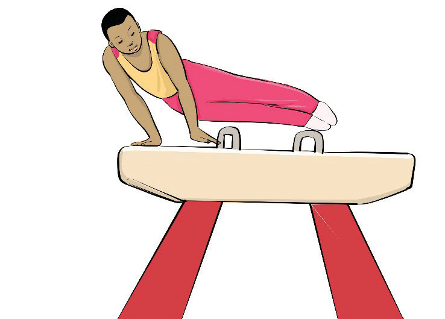

(ii)
- (i) Stand beside the pommel horse;
- (ii) Jump up and place one leg over while holding the handles;
- (iii) Swing legs to start a scissor motion and exit; Then:
- (iv) Run toward the pommel horse;
- (v) Jump and glide onto the pommel horse while holding the handles; and
- (vi) Immediately begin your routine with leg swings, Figure 4.21.

Activity 4.21
Search from internet and other sources on how to execute a knee mount and practice it repeatedly until you master the skill.
Exercise 4.6
1.
Why is body control important when performing a balance beam mount?
2.
What are the biggest challenges when performing pommel horse mount?
Dismounts
A dismount is the skill in a gymnastics routine where the gymnast leaves the apparatus and lands on the floor in a controlled manner. It is one of the most essential elements of a routine because it shows control, difficulty, and precision. There are various types of dismounts grouped by the apparatus used. It includes balance beam dismounts, uneven bars dismount, parallel bars dismount, and pommel horse dismounts. Others are the ring dismounts and vault dismounts. The following steps will help you practice the various dismounts: